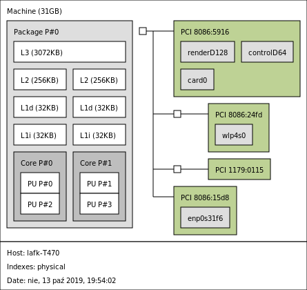
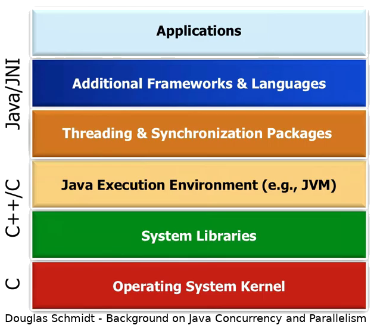

> inxi -S
System: Host: lafk-T470 Kernel: 4.15.0-64-generic x86_64 bits: 64 Desktop: Xfce 4.12.3
Distro: Ubuntu 18.04.3 LTSJava Memory Model with mechanical sympathy

Why mechanical sympathy?
The most amazing achievement of the computer software industry is its continuing cancellation of the steady and staggering gains made by the computer hardware industry.
Henry Petroski
— an American engineer specializing in failure analysis
— an American engineer specializing in failure analysis
Hardware: orders of magnitude
1971, 4004: 4b, 640KB of mem, 60KOPS
1976: 8086: 16b, 1MB of mem, 5-10MHz
2017: Intel Core i9: x86-64 so 64b, 10 cores, 13,2MB L3, 3.3GHz
2017: AMD Ryzen Threadripper: x86-64, 16 cores, 32MB L3, 3.4GHz
Data after ComputerHope.
By comparison, software
there is no single development, in either technology or management technique, which by itself promises even one order of magnitude [tenfold] improvement within a decade in productivity, in reliability, in simplicity.
Fred Brooks
— No Silver Bullet – Essence and Accident in Software Engineering
— No Silver Bullet – Essence and Accident in Software Engineering
Yes, higher-order languages (Ada, Python, Java…), reuse, methodologies (Waterfall, Agile, Scrum), build tools, paradigms (OOP, FP), testing (TDD, BDD, ATDD), architectures (monolith, µservices, DDD)… but still.
Do we have something like Moore’s law? AFAIK, no.
Can multithreading be the silver bullet?
Firstly, it’s hardware-based (cores)
Amdahl says: depends on serial part of your program
USL says: Amdahl forgot about contention and communication overhead
but if we use it well and choose the problem/tooling well…
By design
There are two ways of constructing a software design. One way is to make it so simple that there are obviously no deficiencies. And the other way is to make it so complicated that there are no obvious deficiencies.
sir C.A.R. Hoare
— QuickSort | null | CSP | monitor | Hoare logic creator
— QuickSort | null | CSP | monitor | Hoare logic creator
Mechanical sympathy
You don’t have to be an engineer to be be a racing driver, but you do have to have Mechanical Sympathy.
Jackie Stewart
— racing driver
— racing driver
- Mechanical sympathy
knowing your hardware platform and applying that knowledge.
Eco-developer manifesto
Not only well-crafted software but also efficient software
Not only steadily adding value but also benchmarking
Not only community of professionals but also mechanical symphatizers
Not only productive partnerships but also reducing CO2 emissions
by Tomasz "@LAFK_pl" Borek in hopes of reducing global warming
About me

Agenda
Current situation and mechanical sympathy
Multithreading for humans
Hardware
Java
Summary and further reading
Technicalities - Java
unless stated otherwise: OpenJDK 11, the LTS one.
JLS for JDK 11, chapter 17 - Threads and Locks
- JCIP
Java Concurrency in Practice, as depicted on https://jcip.net
Technicalities - OS
Technicalities - box

lstopo from hwloc package
Multiple
Singular read or write means one (1) read or write operation, so one (1) access to a given memory location.
Read_s_ or write_s_ are plural - meaning multiple reads and multiple writes and multiple memory accesses (and I may stop typing multiple from now on, yay!).
Questions?

Hardware primer
Intel mainly
Problem #0: Memory accesses conflict
memory location can be read or written
2 accesses to same memory location conflict if at least one is a write
Problem #1: Data Race
Multiple threads are executed by multiple executors at the same time.
reads and writes happen from/to the same location (i.e. RAM)
in other words: memory accesses conflict and happen simultaneously
Problem #1: Data Race
memory accesses conflict and happen simultaneously?
Non-deterministic outcomes on current hardware, AFAIK.
Problem #2: Visibility
Multiple threads are executed by multiple executors at the same time.
Writes and reads happen to RAM or caches.
Thread actions interleave, usually there’s more than one program order.
Classic counter problem
Problem #3: False sharing
Multiple threads are executed by multiple executors at the same time.
Memory is far, caches are on hand, data is saved to caches then
Caches use LINES
Shorter than cache line: something gets added
Longer than cache line: gets broken
Messy cache coherency
Modified: somebody changed it, flush to bus or keep going
Exclusive: only I hold it unless bus says otherwise
Shared: not Exclusive! Lots of bus reads. Bus writes?
Invalid: this is where bus writes go. CPU write takes us to Exclusive.
Modern CPUs use newer variants with additional states.
Code optimizations
Everybody want speed, code optimizations are a way
Imperative code is natural for CPU (loop unrolling, function inlining)
Caches are faster than RAM (prefetching, read/write ahead)
Out-of-Order-Execution, OOE == branch prediction
This may break the program
Code optimizations break the program how
illegal order of statements: thread ends before it begins?
Spectre (mitigations, not fixes)
confuses the programmers (happens behind the scenes)
Problem #4: code optimizations
Multiple threads are executed by multiple executors at the same time.
Writes and reads happen to RAM or caches, i.e. L2.
Statements in code can be rearranged for greater efficiency.
Rearrangements can be done by compiler or CPU.
Sometimes they can be illegal (thread ends before it begins?)
Memory models - solution to P#4
have rules to distinguish illegal from legal
order the events so the dev is less/not confused
are divided depending on said order strength
x8086 and JMM are mostly partial orders
are on CPU microarchi or language level (MM or JMM)
Questions?
Java

Fork Join framework
ForkJoin itself, think map-reduce in Java
memory-intensive, work-stealing, own thread pool
Arrays.parallelSort>Arrays.sortparallelStream() > stream()
JCIP annotations
<dependency>
<groupId>net.jcip</groupId>
<artifactId>jcip-annotations</artifactId>
<version>1.0</version>
</dependency>Class, field, and method level annotations for describing thread-safety policies.
— package Javadoc
Class-level ones
@Immutable: said class is immutable, implies@ThreadSafe@ThreadSafe: no extra synchro required, no matter what access sequence or thread interleaving@NotThreadSafe: as name states, optional, offered for extra clarity
Locking - guarding
@GuardedBy("this")- intrinsic lock,synchronizedcase@GuardedBy("Some.class")- case forstatic synchronized
ReadWriteLock
separates reads from writes
default impl is also
reentranthas a pair of locks,
read one can be held multiple times as long as write one isn’t held
writer lock is exclusive and can be downgraded to read lock
Useful API
ThreadLocalRandom>RandomCompletableFuture- FP and async and other examplesFutureTask- bridge betweenRunnableandCallableInheritableThreadLocal- works on sub-threads tooTransferQueueorSynchronousQueue
Testing
exhaustive, repeated testing, stress testing, model checking, benchmarking
Solutions
P#0: separate reads from writes, e.g.
ReentrantLockP#1: immutable classes, local variables,
ThreadLocal<YourObject>P#2: as above + synchronization and atomicity (so JMM keywords)
P#3: padding,
@ContentedorBlackHolefrom JMHP#4: memory model
JMM
- JMM, Java Memory Model
set of rules determining happens-before relationship and order of execution. Described in JLS 17.4, uses
final,volatileandsynchronizedkeywords.
Java Memory Model
A memory model describes, given a program and an execution trace of that program, whether the execution trace is a legal execution of the program. The Java programming language memory model works by examining each read in an execution trace and checking that the write observed by that read is valid according to certain rules.
— JLS 17.4
JMM elements
program order. synchronization order
happens-before, synchronized-with
hardware-supported via memory barriers
Java Object Layout
fields layout, header & alignment info
externals - what is reachable from our object
footprint estimate
works with different VM modes (compressed OOPs, 32/64b)
Java Microbenchmark Harness
Benchmarking standard and great testing tool
Questions?
Summarizing
Mechanical sympathy - know and use your HW, be eco and perf,
mthreading may be silver bullet sometimes (Amdahl and USL say when)
Avoid or minimize conflicting accesses / data races
less heap more stack
no shared state > share immutables > share carefully synchronized / atomicized
JCIP annotations, juc, actors, JOL, JMH, lstopo (hwloc)
Multithreading for humans
multithreading is the norm now, such bugs will bite also you
high-level API require understanding to be used properly
same with multithreading design patterns, including those used in JDK
performance
Absolute minimum 4 everyday programmer
Amdahl’s and USL’s math
Local variables rulez
Immutable classes
JCIP annotations
ForkJoin and parallel streams
No time today
external and some internal concurrency frameworks
JIT,
jcmdtool, Unsafe
Further reading
JMM: JLS 17.4,
JCIP
Alexey Shipilev - JMM pragmatics
any related papers by Leslie Lamport, Sarita Adve or Hans Boehm
Questions?